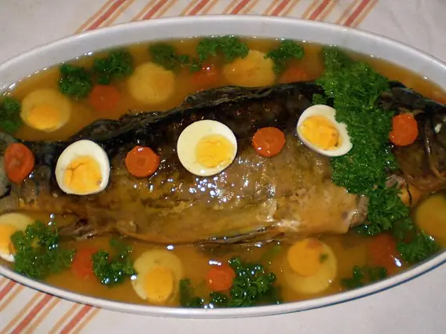

Фото: Olaf.herfurth, CC BY-SA 3.0

Гефилте фиш (рыбные котлеты в бульоне)
Упрощённая фаршированная рыба: отварные котлеты из минтая с морковью
70 мин4 порц.249 ккал на порциюБ 34 · Ж 5 · У 18Еврейская кухня
Продукты на 4 порц.
- Минтай700 г
- Лук репчатый3 шт
- Морковь2 шт
- Яйцо куриное2 шт
- Маца1 лист
- Сахар1 ч. л.
- Соль1,5 ч. л.
- Перец чёрный молотый1 щеп.
- Лавровый лист2 шт
- Вода1500 мл
- Свёкла по желанию1 шт
Как готовить
- Минтай разделайте на филе. Кожу, головы и кости сложите в кастрюлю, залейте водой, добавьте 1 луковицу и лавровый лист, варите 20 минут на слабом огне, затем процедите бульон.
- Мацу измельчите в крошку.
- Филе и 2 луковицы пропустите через мясорубку. Добавьте яйца, мацу, соль, сахар и перец, вымешайте фарш 3-4 минуты.
- Морковь нарежьте кружками, свёклу, если используете, тоже кружками. Выложите на дно кастрюли и залейте процеженным бульоном.
- Мокрыми руками сформуйте продолговатые котлеты и опустите в кипящий бульон.
- Варите под крышкой на слабом огне 40 минут. Котлеты станут плотными и белыми внутри.
- Остудите прямо в бульоне, подавайте холодными, на каждую котлету кружок моркови.
Совет. Свёкла на дне придаёт котлетам розоватый цвет и не даёт им пригореть. Вместо минтая подойдёт карп или смесь двух рыб.